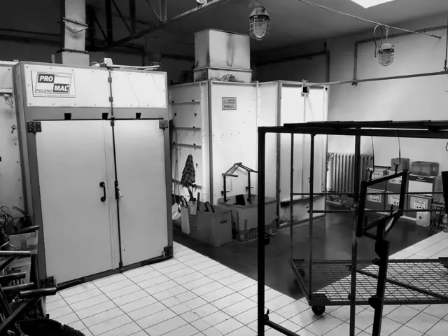

Malowanie proszkowe
140×125×60cm
Przez lata malowaliśmy tu głównie ramy rowerów rehabilitacyjnych. Twój detal jest podobnej wielkości? To nasza robota. Od 10 sztuk, bo piec grzeje się tyle samo dla jednej sztuki co dla pięćdziesięciu.
- Gabaryt
- 140 × 125 × 60 cm (szer. × wys. × gł.)
- Minimum
- 10 sztuk
- Kolory
- pełna paleta RAL: mat, półmat, połysk, struktura
- Przygotowanie
- mycie chemiczne i odtłuszczanie
- Sprzęt
- Pro-Mal, Wagner EPG Sprint